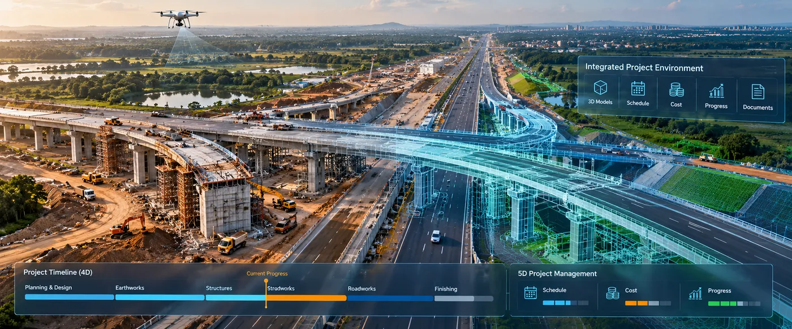

The Assignment
A major road infrastructure project required an integrated digital project-management environment to improve visibility across design, construction progress, schedule and cost.
The assignment involved implementing a 5D BIM-based project management framework for a 17 km road corridor, integrating 3D models with project schedule and cost information while providing a common digital environment for project monitoring and coordination.
Our Approach
CS TECH Ai combined BIM, GIS and digital project-management capabilities to create an integrated environment for monitoring and managing the infrastructure programme.
The engagement included:
- Implementation of a Digital Project Management Platform with PMO
- Development of 3D models of roads and associated assets
- Integration of BIM and project-management information
- 4D integration of the project schedule with the digital model
- 5D integration of cost information with the project environment
- Real-time progress monitoring using UAV surveys across the entire corridor
- Maintaining consistency between models and project drawings
- Establishment of a single source of truth to reduce duplication of project information
- Digital monitoring of project progress against planned schedule and cost
- Creation of an integrated environment supporting project coordination and management
The wider CS TECH Ai Digital Project Management framework integrates spatial and non-spatial information, with time and cost forming the fourth and fifth dimensions respectively within a Common Data Environment.